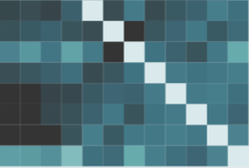

Visual Analytics for Concept Exploration in Subspaces of Patient Groups: Making Sense of Complex Datasets with the Doctor-in-the-Loop

Venue. Brain Informatics (2016)
Authors. Michael Hund, Dominic Böhm, Werner Sturm, Michael Sedlmair, Tobias Schreck, Torsten Ullrich, Daniel A. Keim, Ljiljana Majnaric, Andreas Holzinger
Abstract. Medical doctors and researchers in bio-medicine are increasingly confronted with complex patient data, posing new and difficult analysis challenges. These data are often comprising high-dimensional descriptions of patient conditions and measurements on the success of certain therapies. An important analysis question in such data is to compare and correlate patient conditions and therapy results along with combinations of dimensions. As the number of dimensions is often very large, one needs to map them to a smaller number of relevant dimensions to be more amenable for expert analysis. This is because irrelevant, redundant, and conflicting dimensions can negatively affect effectiveness and efficiency of the analytic process (the so-called curse of dimensionality). However, the possible mappings from high- to low-dimensional spaces are ambiguous. For example, the similarity between patients may change by considering different combinations of relevant dimensions (subspaces). We demonstrate the potential of subspace analysis for the interpretation of high-dimensional medical data. Specifically, we present SubVIS, an interactive tool to visually explore subspace clusters from different perspectives, introduce a novel analysis workflow, and discuss future directions for high-dimensional (medical) data analysis and its visual exploration. We apply the presented workflow to a real-world dataset from the medical domain and show its usefulness with a domain expert evaluation.